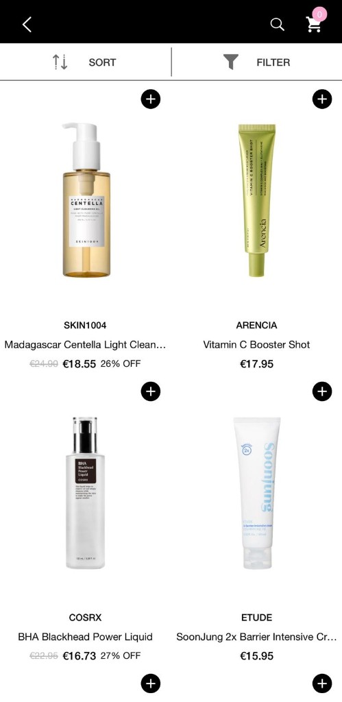
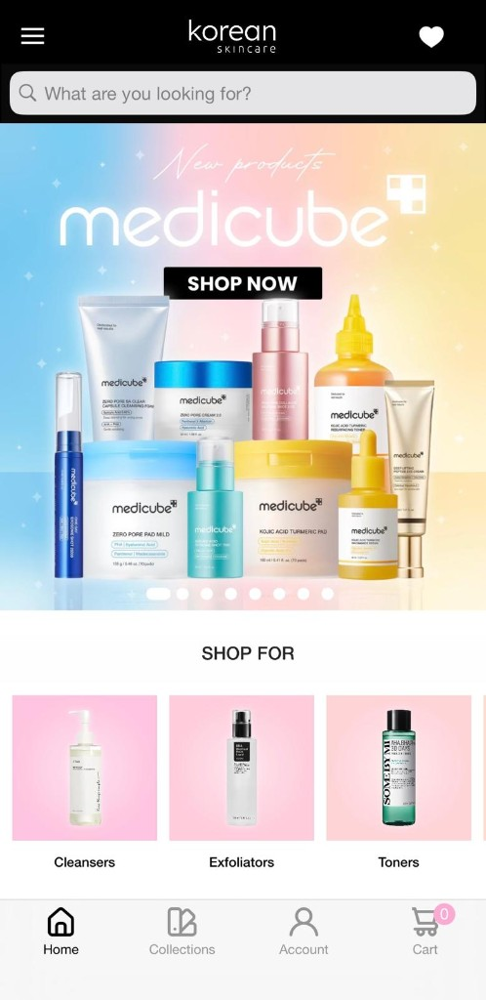
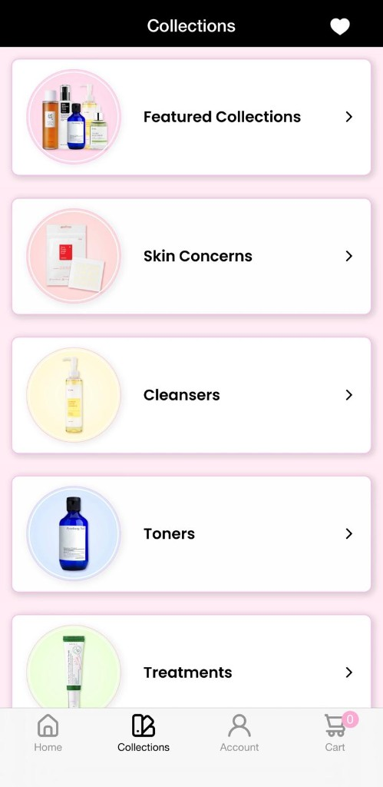
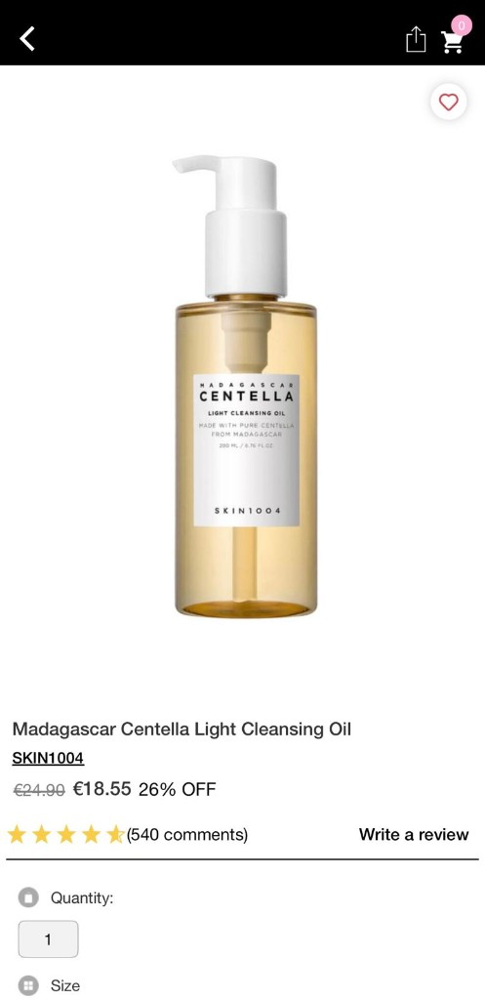

Key Issues & Severity
Analysis of critical friction points identified during the Korean Skincare interface audit. These findings inform our prioritization strategy.
Inconsistent Filtering

Filtering does not feel equally available across browsing and search. This creates friction for users who already know what they want and need to narrow products quickly.
Weak Product Card Cues
Product cards do not provide enough decision-making information. Users may need to open many product pages before understanding which product is relevant.
Promotion-Led Discovery

The discovery experience is strongly driven by banners and campaigns. This may reduce the feeling of personalized skincare guidance.
Limited Skin Concern Guidance

Skincare shopping depends on personal needs such as acne, dryness, sensitivity, anti-aging, or barrier repair. Without clear skin concern guidance, users may feel unsure.
Hard to Compare Products

When product information is not easy to scan, users need more effort to compare options. This can slow down decision-making and reduce confidence.
Severity Rating Guide
Prioritizing technical sprints based on user impact levels.
Blocks the user or causes significant confusion.
Creates minor friction but is non-blocking.
Key Takeaway
High severity issues indicate a need for a structured, guidance-first navigation model.